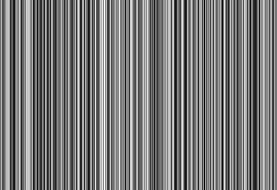
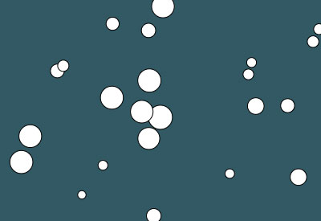

Voorbeelden aanpassen


In deze les ga je bestaande voorbeelden bekijken en aanpassen. Bij elk voorbeeld horen een aantal opdrachtjes die je moet doen, en je mag daarnaast ook zelf dingen veranderen. Het gaat erom dat je leert hoe de code werkt door ermee te experimenteren. Zoals we al eerder hebben gezien hoef je nog niet alle code te snappen om ermee te kunnen werken. Open eerst de p5 editor en log weer in met je email adres en wachtwoord zodat je je werk kunt opslaan.
Voorbeelden
-
function setup() { createCanvas(400, 400); } function draw() { if (mouseIsPressed) { fill(0); } else { fill(255); } ellipse(mouseX, mouseY, 80, 80); }- Probeer eerst even te bedenken wat bovenstaande code doet. Kopiëer dan de code, plak in de editor en probeer het uit. Doet het wat je verwachtte?
- Verander de vulkleur wanneer de muisknop niet ingedrukt is.
- Teken een andere vorm (bijv. rect) als de muisknop ingedrukt is.
-
https://p5js.org/examples/math-random.html
Kopiëer de code uit dit voorbeeld en plak in de editor.- Laat de lijnen sneller verspringen.
- Zorg dat een random RGB kleur wordt gekozen ipv. een grijswaarde.
- Teken minder maar dikkere lijnen per keer.
-
https://p5js.org/examples/hello-p5-interactivity-1.html
Kopiëer wederom de code uit dit voorbeeld en plak het in de editor.- Zorg dat de kleur verandert als je buiten de cirkel klikt ipv. erin.
- Maak de cirkel groter en zorg dat dit nog steeds werkt, controleer door dichtbij de rand van de cirkel te klikken.
- Maak de code efficiënter door de ingebouwde variabelen
widthenheightte gebruiken in deellipse()endist()functies.
-
https://p5js.org/examples/objects-array-of-objects.html
- Wijzig het aantal cirkels dat getekend wordt.
- Verander de random grootte van de cirkels.
- Pas de snelheid van de cirkels aan.
- Maak de snelheid van de cirkels afhankelijk van hun diameter.
-
https://p5js.org/examples/hello-p5-animation.html
- Laat de cirkel sneller heen een weer wiebelen.
- Pas de code aan zodat de cirkel horizontaal beweegt van links naar rechts, en op en neer wiebelt.
-
https://p5js.org/examples/math-distance-2d.html
- Zorg dat de cirkels kleiner getekend worden.
- Maak het donkere gebied rondom de muis positie groter.
Meer voorbeelden om mee te experimenteren:
- https://p5js.org/examples/simulate-spirograph.html
- https://p5js.org/examples/drawing-patterns.html
- https://p5js.org/examples/math-noise-wave.html
- https://p5js.org/examples/math-double-random.html
- https://p5js.org/examples/input-milliseconds.html